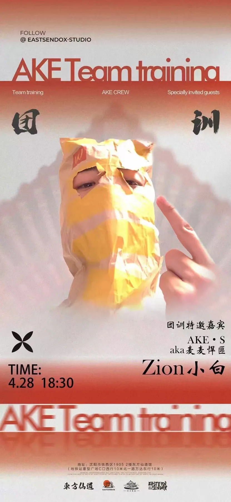
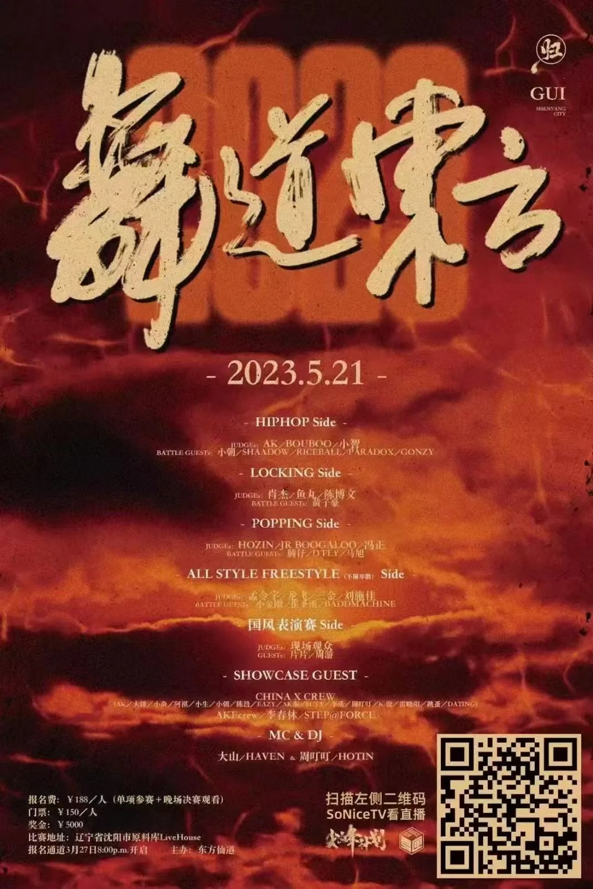

2023–2025 · Shenyang, China · 东方仙道 crew
Building a Chinese street-dance identity from inside the scene.
A set of crew-led visuals exploring how Chinese cultural references can become part of a living street-dance brand.
A street-dance brand built around bringing Chinese cultural elements into contemporary dance practice.
As a former crew member, I independently designed the internal battle and team-training materials, and participated in the design of larger showcase events.
The Chinese-song showcase reached around 200–300 people in Shenyang; 舞道东方 was an international event with an estimated 1,000+ audience.
Brand in motion
One cultural position, multiple event formats.
Some pieces were independent design commissions; others were collaborative event visuals. Together they show how the crew brand moved between internal training, local showcases and larger competition contexts.



Outcome
The identity became a way to make cultural fusion visible and repeatable.
Across crew battles, training announcements and showcases, the work helped give 东方仙道 a recognisable visual voice: Chinese references, street-dance energy and an active community context. The most important part was not making one “Chinese-style” poster, but building a point of view that could keep generating new events and images.